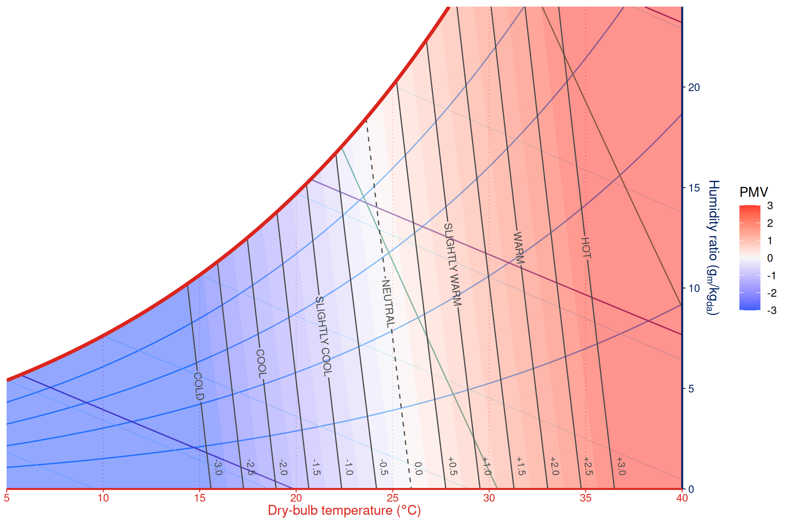
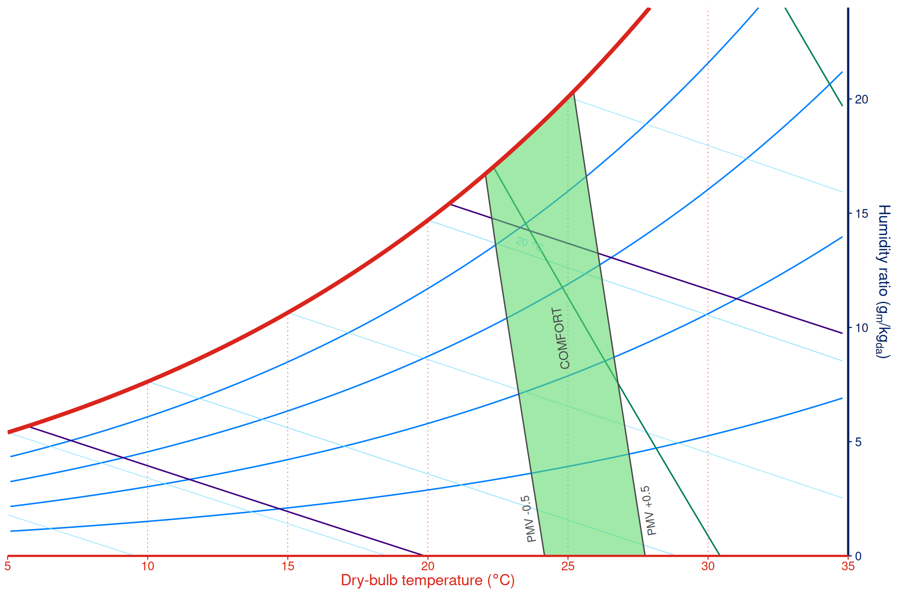
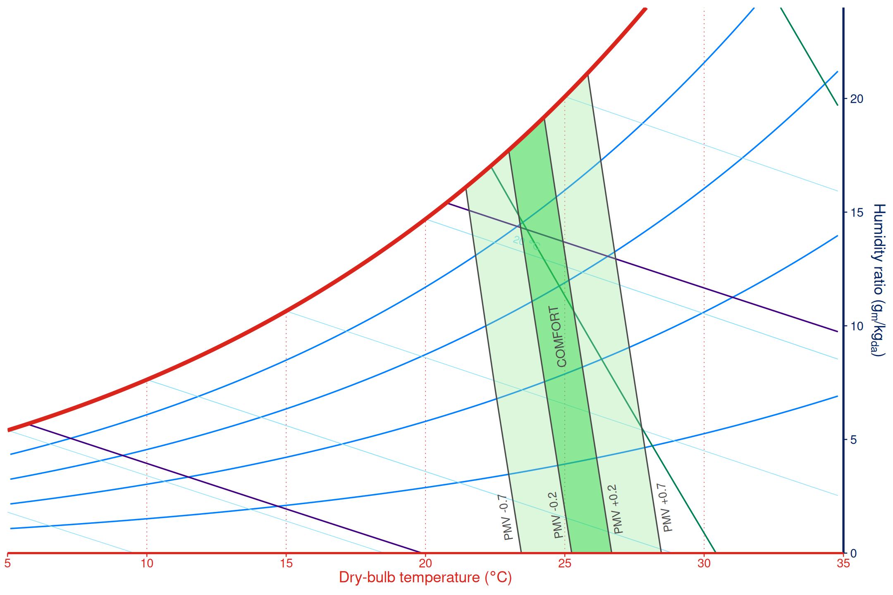
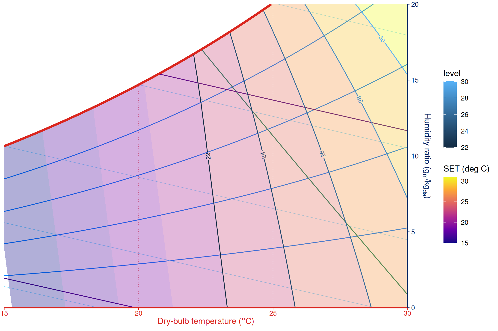
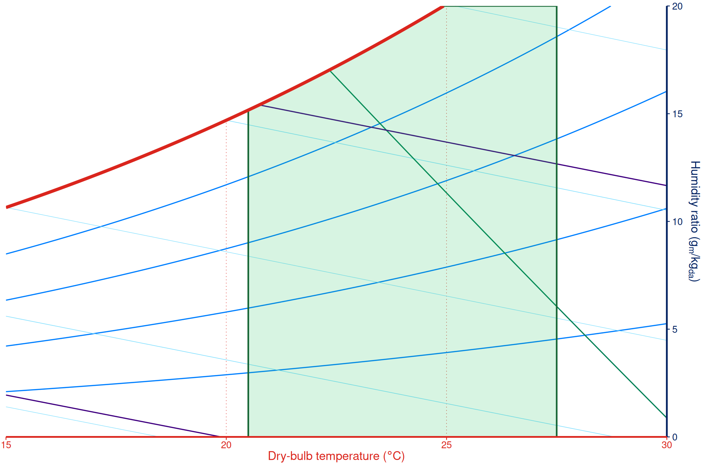
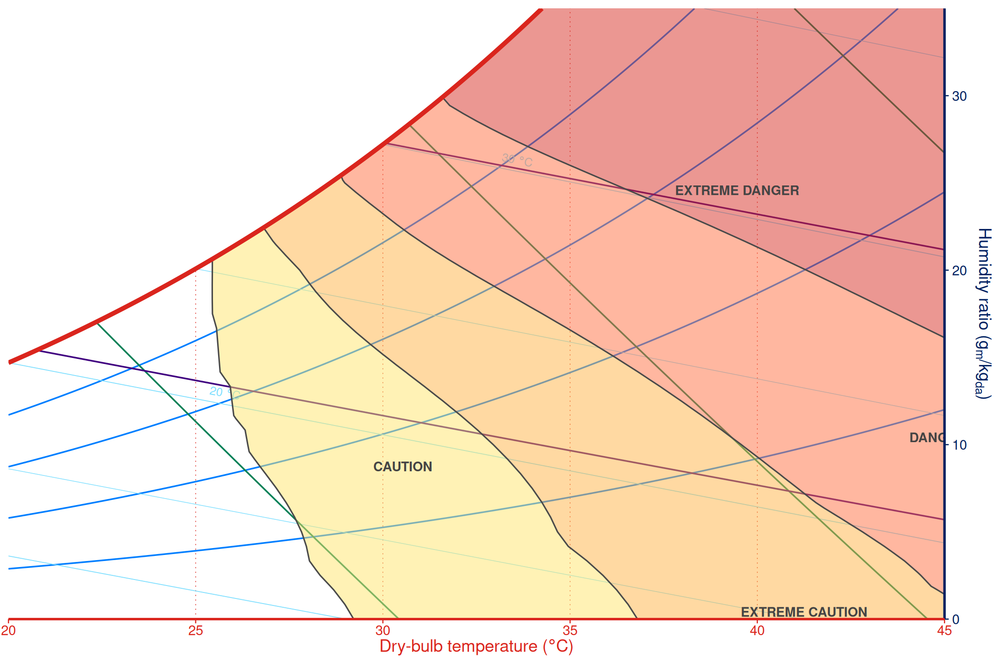
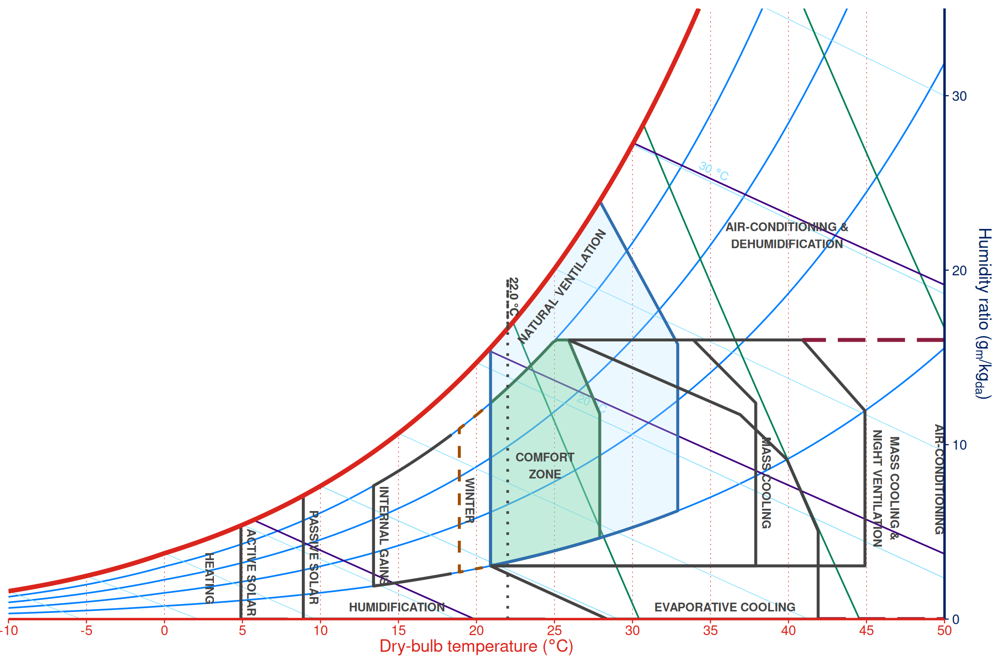
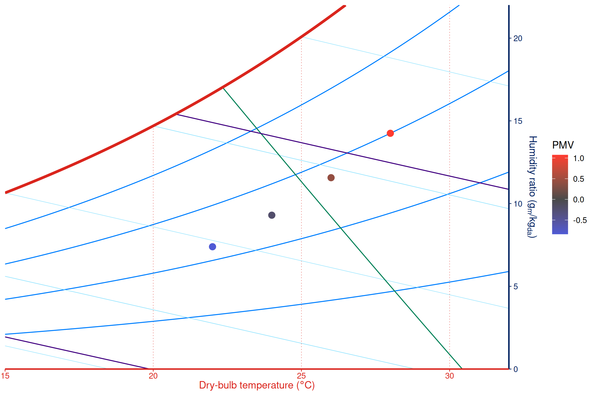
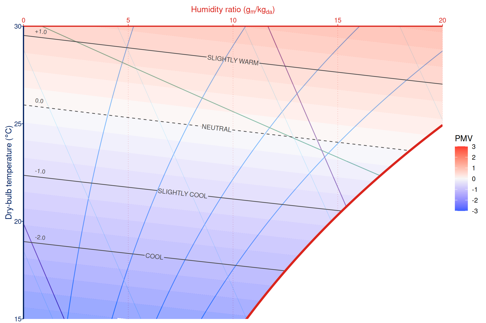

Comfort overlay layers evaluate thermal comfort models on the current
psychrometric panel. They inherit the chart units, pressure, limits, and
Mollier orientation from ggpsychro(), so comfort regions
can be composed with the same + workflow as other ggplot
layers.
PMV overlays
The default comfort model is ISO 7730 PMV.
geom_comfort_overlay() draws filled PMV bands,
scale_fill_comfort_pmv() applies a PMV-centered diverging
palette, and geom_comfort_pmv_lines() adds labelled PMV
curves.
ggpsychro(tdb_lim = c(5, 40), hum_lim = c(0, 24)) +
psychro_preset("minimal") +
geom_comfort_overlay(n = c(70, 48), gap = 0) +
scale_fill_comfort_pmv(name = "PMV") +
geom_comfort_pmv_lines(levels = seq(-3, 3, by = 0.5), n = 140)
Standard comfort zones
For PMV-based standards, geom_comfort_standard_zone()
draws the filled zone, PMV boundary curves, and labels from a standard
helper.
ggpsychro(tdb_lim = c(5, 35), hum_lim = c(0, 24)) +
psychro_preset("minimal") +
geom_comfort_standard_zone(comfort_standard_ashrae55_2017(), n = 140)
ggpsychro(tdb_lim = c(5, 35), hum_lim = c(0, 24)) +
psychro_preset("minimal") +
geom_comfort_standard_zone(comfort_standard_en15251_2007(), n = 140)
SET and adaptive models
Create reusable model objects with comfort_model_*()
helpers. SET overlays default to the "set" metric, while
adaptive models default to "acceptability". For continuous
metrics such as SET, use filled bands with labelled contours so the
field remains visible without losing the level boundaries.
geom_comfort_contour(label = TRUE) draws the contour and
its inline level label as one layer, leaving a gap in the contour where
the label is placed.
set_model <- comfort_model_set()
ggpsychro(tdb_lim = c(15, 30), hum_lim = c(0, 20)) +
psychro_preset("minimal") +
geom_comfort_overlay(
model = set_model,
metric = "set",
levels = seq(14, 32, by = 2),
n = c(70, 42),
alpha = 0.32
) +
scale_fill_viridis_c("SET (deg C)", option = "C") +
geom_comfort_contour(
model = set_model,
metric = "set",
breaks = seq(22, 30, by = 2),
n = c(70, 42),
label = TRUE,
label_size = 3,
colour = "#2F2F2F",
linewidth = 0.7
)
adaptive_model <- comfort_model_adaptive(t_running = 20)
ggpsychro(tdb_lim = c(15, 30), hum_lim = c(0, 20)) +
psychro_preset("minimal") +
geom_comfort_zone(
model = adaptive_model,
fill = "#22c55e",
alpha = 0.18,
colour = "#166534",
linewidth = 0.7
)
Adaptive comfort zones are temperature bands rather than
humidity-dependent fields, so a filled adaptive zone is expected to look
like a vertical band instead of a curved humidity field. In the example
above, t_running = 20 gives an ASHRAE 55 80% acceptability
interval from 20.5 to 27.5 degrees C; because tr defaults
to tdb, the zone is clipped only by the current chart
limits and saturation boundary.
Outdoor Heat Index
Heat Index overlays use comfort_model_heat_index() and
geom_comfort_heat_index() to draw Outdoor Work Heat Index
categories. The model uses a NOAA-style Heat Index calculation
internally in Fahrenheit, while the layer follows the parent chart’s
unit system.
ggpsychro(tdb_lim = c(20, 45), hum_lim = c(0, 35)) +
psychro_preset("minimal") +
geom_comfort_heat_index(n = c(70, 42), alpha = 0.5)
Givoni bioclimatic strategies
Givoni overlays are strategy zones rather than a single continuous
comfort metric. Create a strategy with
comfort_strategy_givoni() and draw it with
geom_comfort_givoni(). The mean outdoor temperature shifts
the strategy geometry and is shown on the chart as a dashed marker.
givoni <- comfort_strategy_givoni(mean_outdoor = 22)
ggpsychro(tdb_lim = c(-10, 50), hum_lim = c(0, 35)) +
psychro_preset("minimal") +
geom_comfort_givoni(givoni, alpha = 0.45)
Use zone_style with element_comfort_zone()
to highlight individual strategy zones without changing the strategy
geometry.
ggpsychro(tdb_lim = c(-10, 50), hum_lim = c(0, 35)) +
psychro_preset("minimal") +
geom_comfort_givoni(
givoni,
zone_style = list(
comfort = element_comfort_zone(
fill = "#66D27A", colour = "#1F5F2D", alpha = 0.35
),
natural_ventilation = element_comfort_zone(
fill = "#B6E3FF", colour = "#2F6FB0", alpha = 0.25
),
winter = element_comfort_zone(
colour = "#A14D00", linetype = "dashed"
),
air_conditioning = element_comfort_zone(
colour = "#8B1E3F", linewidth = 1.2
)
)
)
State metrics
stat_comfort_state() evaluates the model at supplied
psychrometric states. The computed comfort fields can be used with
after_stat().
states <- data.frame(
tdb = c(22, 24, 26, 28),
relhum = c(45, 50, 55, 60)
)
ggpsychro(states, tdb_lim = c(15, 32), hum_lim = c(0, 22)) +
psychro_preset("minimal") +
stat_comfort_state(
aes(tdb = tdb, relhum = relhum, colour = after_stat(pmv)),
size = 3
) +
scale_colour_gradient2(
"PMV",
low = "#3B5FFF",
mid = "#4A4A4A",
high = "#FF3B30",
midpoint = 0
)
Mollier and IP charts
Comfort layers follow the parent chart’s coordinate system. Use
mollier = TRUE for Mollier orientation or
units = "IP" for IP inputs.
ggpsychro(tdb_lim = c(15, 30), hum_lim = c(0, 20), mollier = TRUE) +
psychro_preset("minimal") +
geom_comfort_overlay(n = c(50, 30)) +
scale_fill_comfort_pmv(name = "PMV") +
geom_comfort_pmv_lines(levels = seq(-2, 2, by = 1), n = 100)
Use manual psychrometric zones when the desired region is a project-specific operating envelope rather than a thermal comfort model. See Zones and processes for those layers.